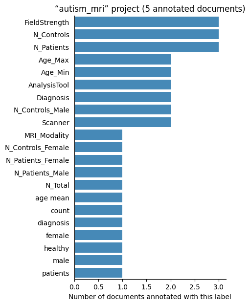
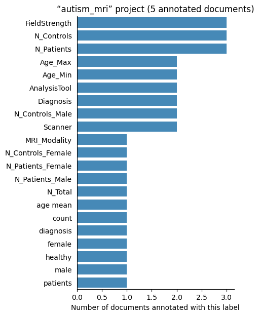

Biomedical literature annotations#
This repository stores manual annotations (a.k.a tagging, labelling) of biomedical scientific publications. Examples of information that has been annotated in some documents are the number of study participants, their mean age, or the imaging modality. Such annotations have diverse uses such as studying the evolution of a scientific field’s methods, evaluating automatic information extraction systems, or informing meta-analyses.
The documents found here are journal articles from PubMedCentral, collected using pubget. The annotations are made with labelbuddy, and data is stored in labelbuddy’s format (JSON).
This page provides a brief overview of the repository’s content, and the rest of the documentation illustrates how to use and contribute to the repository:
Introduction
Analyses
Projects
- NER_biomedical
- autism_mri
- cluster_inference
- cobidas
- dynamic_functional_connectivity
- fmri_datasets
- neuro-meta-analyses
- neuro-meta-analysis-tables
- neuro-meta-analysis_manually-inspected-topics
- neurobridge_fmri
- neurosynth_use
- old_review-neuro-meta-analyses
- parkinsons
- participant_demographics
- semiauto_ma_features
- tracking_open_datasets
Projects#
The repository’s contents are organized into projects, found in the projects/ directory.
More details about each project are provided at the end of this book.
Here are the currently existing projects:
| project_name | documents | labels | annotators | annotations |
|---|---|---|---|---|
| neuro-meta-analyses | 899 | 102 | 1 | 5107 |
| old_review-neuro-meta-analyses | 849 | 68 | 5 | 8287 |
| participant_demographics | 334 | 21 | 13 | 4230 |
| cluster_inference | 193 | 20 | 2 | 1610 |
| tracking_open_datasets | 136 | 17 | 1 | 235 |
| neuro-meta-analysis-tables | 88 | 4 | 1 | 374 |
| dynamic_functional_connectivity | 70 | 9 | 1 | 94 |
| parkinsons | 60 | 6 | 1 | 411 |
| neuro-meta-analysis_manually-inspected-topics | 44 | 43 | 1 | 236 |
| NER_biomedical | 11 | 9 | 1 | 58 |
| neurosynth_use | 8 | 4 | 1 | 20 |
| cobidas | 7 | 2 | 1 | 23 |
| autism_mri | 5 | 21 | 1 | 69 |
| semiauto_ma_features | 2 | 4 | 1 | 5 |
| fmri_datasets | 0 | 0 | 0 | 0 |
| neurobridge_fmri | 0 | 0 | 0 | 0 |
| Total | 2478 | 265 | 23 | 20759 |
Each project contains 3 directories: labels/, documents/ and annotations/, corresponding to the 3 types of objects stored in this repository.
Documents#
Documents represent scientific journal articles; they contain the article’s text and some metadata.
They are generated by invoking pubget with the --labelbuddy option.
They are stored in labelbuddy’s JSONLines format.
Each document is represented by a JSON dictionary; the keys of interest are:
text: the article’s content as plain text as extracted by pubget.
metadata: basic metadata, including the PubMed ID (pmid), PubMedCentral ID (pmcid), and doi when available.
Document centralization#
pubget outputs labelbuddy jsonl files containing multiple documents. However, note that in this repository, documents are kept in a centralized fashion in the main documents/ directory.
For specific projects, you may place documents under {project_name}/documents/ but not that files in these directories are ignored by default. In order to track these documents, you must first “check in” documents into the central repository. Only documents that have been annotated in a given project (e.g. have a matching annotation in {project_name}/annotations/), will be centralized.
To check in documents from a project, run:
python scripts/checkin_docs --project {project_name}
There are currently 2478 documents in the repository, 2478 of which are annotated (more details below).
Labels#
Labels are simple tags that can be attached to a portion of a document’s text.
They can optionally have a color and a shortcut_key, used in labelbuddy when we are annotating a document.
For example, here are the labels listed in the cluster_inference project:
The labels are stored in labelbuddy’s JSON format; below is an example.
Show code cell outputs
[
{
"name": "smoothing_snippet",
"color": "#aec7e8",
"shortcut_key": "s"
},
{
"name": "cluster_thresh_used",
"color": "#ffbb78",
"shortcut_key": "c"
},
{
"name": "cluster_thresh_in_voxels",
"color": "#98df8a",
"shortcut_key": "v"
},
{
"name": "cluster_thresh_in_mm",
"color": "#ff9896",
"shortcut_key": "m"
},
{
"name": "nonparametric_cluster_thresh",
"color": "#c5b0d5",
"shortcut_key": "n"
},
{
"name": "info_removed_in_name_extract",
"color": "#c49c94",
"shortcut_key": "i"
},
{
"name": "is_annotated",
"color": "#f7b6d2",
"shortcut_key": "a"
},
{
"name": "annotation_in_progress",
"color": "#b8b8b8",
"shortcut_key": "p"
},
{
"name": "discard_this_paper",
"color": "#dbdb8d",
"shortcut_key": "d"
}
]
There are currently 331 labels in the repository.
Annotations#
Finally, an annotation is the association of a label to a portion of a document’s text. It thus consists of a label name and the character positions where it starts and ends.
Here are a few example annotations:
Annotations are stored in labelbuddy’s JSONL format, below is an example for one document. (Here also, the annotations are layed out in a readable way but in the JSONL files the whole information for one document is on a single line.)
Show code cell outputs
{'annotations': [{'end_byte': 895,
'end_char': 893,
'label_name': 'Diagnosis',
'start_byte': 882,
'start_char': 880},
{'end_byte': 930,
'end_char': 928,
'label_name': 'Diagnosis',
'start_byte': 905,
'start_char': 903},
{'end_byte': 1032,
'end_char': 1030,
'label_name': 'N_Patients',
'start_byte': 1030,
'start_char': 1028},
{'end_byte': 1035,
'end_char': 1033,
'label_name': 'N_Patients_Female',
'start_byte': 1034,
'start_char': 1032},
{'end_byte': 1038,
'end_char': 1036,
'label_name': 'N_Patients_Male',
'start_byte': 1036,
'start_char': 1034},
{'end_byte': 1097,
'end_char': 1093,
'label_name': 'N_Patients',
'start_byte': 1094,
'start_char': 1090},
{'end_byte': 1099,
'end_char': 1095,
'label_name': 'N_Patients_Female',
'start_byte': 1098,
'start_char': 1094},
{'end_byte': 1102,
'end_char': 1098,
'label_name': 'N_Patients_Male',
'start_byte': 1100,
'start_char': 1096},
{'end_byte': 1184,
'end_char': 1178,
'label_name': 'N_Controls',
'start_byte': 1182,
'start_char': 1176},
{'end_byte': 1187,
'end_char': 1181,
'label_name': 'N_Controls_Female',
'start_byte': 1186,
'start_char': 1180},
{'end_byte': 1190,
'end_char': 1184,
'label_name': 'N_Controls_Male',
'start_byte': 1188,
'start_char': 1182},
{'end_byte': 1122,
'end_char': 1118,
'label_name': 'Age_Min',
'start_byte': 1120,
'start_char': 1116},
{'end_byte': 1215,
'end_char': 1207,
'label_name': 'Age_Max',
'start_byte': 1213,
'start_char': 1205},
{'end_byte': 12845,
'end_char': 12811,
'label_name': 'FieldStrength',
'start_byte': 12844,
'start_char': 12810},
{'end_byte': 12855,
'end_char': 12821,
'label_name': 'Scanner',
'start_byte': 12836,
'start_char': 12802},
{'end_byte': 13399,
'end_char': 13364,
'label_name': 'AnalysisTool',
'start_byte': 13389,
'start_char': 13354},
{'end_byte': 13710,
'end_char': 13675,
'label_name': 'AnalysisTool',
'start_byte': 13706,
'start_char': 13671},
{'end_byte': 17945,
'end_char': 17905,
'label_name': 'AnalysisTool',
'start_byte': 17941,
'start_char': 17901}],
'metadata': {'chapter': 1,
'doi': '10.3389/fnbeh.2021.787383',
'field_positions': {'abstract': [460, 2266],
'authors': [0, 225],
'body': [2275, 45399],
'journal': [226, 246],
'keywords': [379, 447],
'publication_year': [248, 252],
'title': [263, 365]},
'page': 3,
'part': 1,
'pmcid': 8883821,
'pmid': 35237135,
'text_md5': 'ff77a940471469970a2557933b01eb11'},
'utf8_text_md5_checksum': 'ff77a940471469970a2557933b01eb11'}
In total there are 20759 annotations in the repository.
Number of labelled documents by project#
Now, we display the number of documents annotated with each label in the different projects:

 
